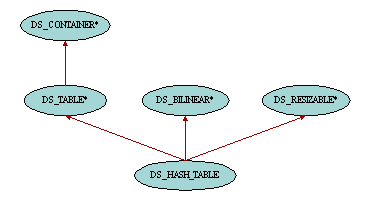

| Tables |

Tables are data structures whose items are accessible by keys. Therefore the class DS_TABLE has two generic parameters. As for all other container classes, the first parameter G represents the type of the items, whereas the second parameter K is the type of the keys which are associated with the items. The features provided by class DS_TABLE are very similar to some of those of class DS_INDEXABLE. The difference comes from the fact that in DS_INDEXABLE keys are contiguous integers whereas in DS_TABLE keys can be of any type, and hence not necessarily contiguous. The main features introduced in class DS_TABLE are item to access items by key, put to insert new items and replace to associate an existing key with another item, remove to remove an item and its associated key from the table, valid_key to check whether a key can be used in the table and has to check whether an item has already been inserted in the table with a given key.
One possible implementation of tables is hash tables. A hash table is typically made up of an array where items are accessed by integer index. Therefore the keys used in the hash tables should provide a means to yield such integer value through a hashing mechanism. This is exactly what feature hash_code from HASHABLE is for, and therefore the second generic parameter of DS_HASH_TABLE is constrained by HASHABLE. Thanks to this implementation, features of hash tables are usually more efficient than linked implementations since access time in an array is bounded by a constant regardless of the number of items in the container. However the hash code associated with the keys is not necessarily unique, and therefore collisions may happen and hence slow down the process. No optimization effort has been made when writing DS_HASH_TABLE in order to take care of collisions. In particular it doesn't take advantage of the well known algorithms using prime numbers when collisions occur. The implementation used here is very simple and was deemed satisfactory enough for its usage in the rest if the Gobo Eiffel libraries. In particular, some benchmarks have proven that DS_HASH_TABLE behaved better than class HASH_TABLE from EiffelBase which uses a collision-resolution algorithm based on prime numbers. It is not clear to me whether this difference of performance comes from the algorithm itself or from other differences between the implementation of both hash tables, but it is unlikely that the implementation of DS_HASH_TABLE will use more sophisticated algorithms in the future based on these observations.
Another interesting remark about efficiency is that the performance of hash tables depends on the number of collisions that may occur in the table. Therefore the implementation for the hash_code of the keys is very important since returning often the same value for different keys will trigger too many collisions and yield performance degradations. If the hash table appears to be slow and the type of the keys is one of the basic Eiffel types such as STRING, it is recommended to try with another Eiffel compiler whose implementation of hash_code may be better in order to see if it makes a difference. Finally, if the default implementation of hash_code is not optimal for a given set of keys, one can inherit from DS_HASH_TABLE and redefine its feature hash_code to provide a better implementation. For example, consider a school which keeps track of project assignments in a table indexed by students. The obvious solution is to declare:
assignments: DS_HASH_TABLE [PROJECT, STUDENT]
However the implementation of hash_code in class STUDENT inherited from PERSON just returns the age of the person. This implementation of hash_code in class PERSON is perfectly valid in most cases, but it is clear that when dealing with students in the same classroom it is likely that they will all have more or less the same age and hence the same hash code. In this particular case it is better to provide a better implementation for hash_code in DS_HASH_TABLE to avoid the numerous collisions:
class ASSIGNMENTS
inherit
DS_HASH_TABLE [PROJECT, STUDENT]
redefine
hash_code
end
creation
make
feature {NONE} -- Implementation
hash_code (s: STUDENT): INTEGER is
-- Hash code of student s
do
Result := s.name.hash_code
end
end -- class ASSIGNMENTS
The keys are directly stored in the hash table without being copied. Therefore it is important that the hash code associated with each key doesn't change while the key is stored in the hash table. Otherwise the hashing mechanism would be broken and it would be impossible to access the item associated with this key. Likewise, keys are compared in the hash table using the feature is_equal from class GENERAL. Therefore if the critera used to implement the function is_equal are changed while the key is stored in the hash table, this key might not be recognized properly anymore within this hash table. Needless to say that if two keys are considered equal, they should have the same hash code. The solution when the hash code or equality criteria of a key are likely to vary while the key is stored in the hash table is clone that key when inserting an item associated with it.
The class DS_HASH_TABLE provides traversal facilities inherited from DS_BILINEAR. Although all items will be visited once and only once during a traversal, they will be traversed in an unpredictable order and subsequent traversals may traverse the items in different orders. This is because a hash table is not an ordered containter as can a list be. Items are not inserted before or after other items in the hash table but based on a hashing mechanism and collision-resolution algorithm. Therefore, altering the hash table by adding or removing items or by resizing the table may change the order of the items and hence will invalidate current traversals. For this reason, most of these routines will move off all existing cursors currently traversing the hash table (see the header comments of these routines for details).
As you may now realize after reading the first paragraph above, the performance of hash tables is one of their raison d'être. This had of course to be taken into account when implementing the routines inherited from DS_TABLE. Because of the precondition of item which states that in order to be able to query an item associated with a given key, that item has to exist in the first place, one has to write:
if table.has (k) then
v := table.item (k)
else
...
end
However, both has and item will have to compute the hash code of k and deal with possible collisions in the hash table. In other words we do twice the same thing. The solution adopted in the current implementation of DS_HASH_TABLE is to keep track of the result of last hashing operation in the hash table in a cache. Therefore, in the code above, most of the work of accessing the item at key k will be done only once in the routine has, and item will realize that the key given as argument is the same and hence avoid calling the hashing mechanism again.
Another solution to avoid that would have been to get rid of the precondition in item and return Void when there is no item associated with key k. However this solution goes against the principle of Design by Contract since getting Void could either mean that there is no item for key k or that there is actually one which happens to be Void. Therefore this solution has not been adopted in DS_HASH_TABLE but a better designed alternative also based on the try-and-see principle is available:
table.search (k)
if table.found then
v := table.found_item
else
...
end
Both code excerpts should have the same execution time performance thanks to DS_HASH_TABLE's internal optimizations. Using one or the other is just a question of taste. I personally prefer the first pattern.
|
Copyright © 1999, Eric
Bezault mailto:ericb@gobosoft.com http://www.gobosoft.com Last Updated: 25 September 1999 |